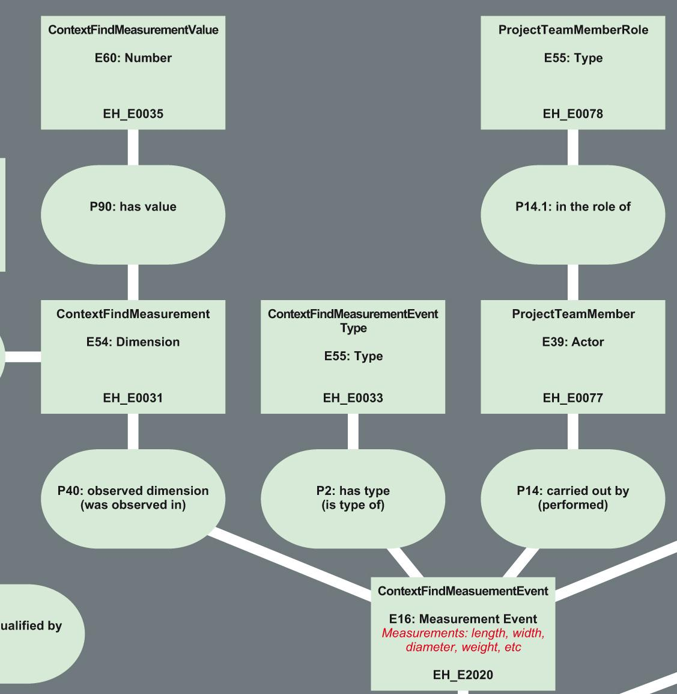

Die ArcheoInf-Ontologie
Bericht zum Arbeitspaket Thesaurus/Ontologie
Die Ontologie
Die Bedeutung der Ontologie für den Mediator
Da es sich bei dem von den Informatikern entwickelten Mediator um ein rein technisches Instrument handelt, stellt sich die Frage, wie in dieses Werkzeug das Fachwissen und die Terminologie der Archäologie eingebunden werden.
Hierzu wurde von Vertretern aller beteiligten Fachbereiche eine Ontologie erstellt, welche das Fachwissen der Archäologie in Klassen und Beziehungen darstellt. Sie dient hierbei als Mittel der Strukturierung und zum Datenaustausch, um bereits bestehende Wissensbestände miteinander zu verbinden. Die Ontologie kann als ein Netz von Hierarchien verstanden werden, in dem Informationen über logische Beziehungen miteinander verknüpft sind oder sein könnten.
Grund für die Modellierung einer solch komplexen Ontologie ist die angestrebte Semantic-Web-Fähigkeit des Mediators. Informationen sollen dadurch nicht nur von Menschen verstanden werden, sondern auch von Maschinen verstanden und weiterverarbeitet werden können. Der Mediator soll so in die Lage versetzt werden, archäologische Informationen bis zu einem gewissen Grade selber zu interpretieren.
Als Sprache wurde sich für die Web Ontology Language (OWL) entschieden, welche in der Lage ist diese Klassen und Relationen zu beschreiben.
Das CIDOC CRM Modell
Zur Erstellung dieser archäologischen Ontologie konnte auf das CIDOC CRM (Conceptual Reference Model) Modell zurückgegriffen werden, welches vom CIDOC (Comité international pour la documentation) als objektorientiertes Referenz-Datenmodell entwickelt wurde. Es enthält Definitionen und eine formale Struktur zur Beschreibung von Begrifflichkeiten und Beziehungen bei der Dokumentation des kulturellen Erbes. Von der englischen Denkmalbehörde English Heritage wurde dieses Modell speziell für die Archäologie angepasst und liegt dem von ArcheoInf verwendeten Modell zu Grunde.
Dieses Modell hat sich mittlerweile zu einem Standart bei der Erstellung von kulturhistorischen Ontologien entwickelt und wird von einer Vielzahl von Institutionen angewendet. So ist eine hohe Kompatibilität von ArcheoInf zu anderen, ebenfalls auf dem CIDOC CRM-Modell beruhenden Institutionen gewährleistet.
An einigen Stellen wird dieses umfangreiche Modell für ArcheoInf erweitert werden müssen. Notwendig ist dies beispielsweise für die Konzepte der Geoinformatik; bisher ist es lediglich möglich numerische sowie textuelle Geoinformationen in das Modell einzubinden. Eine Erweiterung welche die Simple Features Punkt, Linie und Polygon erfassen kann, erscheint notwendig. Ähnliche Probleme sind bei der Anbindung von bibliographischen Informationen zu beobachten. Auch hier wird eine Erweiterung des Modells unumgänglich sein.

Abbildung 1: Ausschnitt aus dem CIDOC CRM EH-Modell. Gezeigt sind die Klassen die zur Darstellung eines Messvorgangs eines Fundstücks benötigt werden.

Abbildung 2: Bisheriger Stand der Modellierung, welche der ersten Version des Mediators zu Grund liegt. Auf der rechten Seite sind die Klassen zu sehen, mit welchen die Datierung sowie die Klassifikation abgebildet werden. Auf der linken Seite sind die räumlichen sowie die projektbezogenen Klassen zu sehen.
Thesaurus
Da die modellierten Klassen selbst keine Information tragen, muss dem Mediator die archäologische Fachterminologie über verschiedene Thesauri „beigebracht“ werden. Man kann sich die Klassen als leere Regale vorstellen, welche nun mit Inhalten gefüllt werden müssen. Die Vokabulare werden direkt an die entsprechenden Klassen der Ontologie angefügt. Beispielsweise werden in die Klasse ArtForm alle archäologischen Klassifikationen in einem Thesaurus geordnet eingebunden.
Diese Thesauri werden von den beteiligten Archäologen aus der Fachliteratur und bereits vorhandenen Thesauri zusammengestellt und sollen die Terminologie der Klassischen Archäologie so umfassend wie möglich abzubilden.
Als Sprache für die Thesaurus-Erstellung wurde sich für SKOS-Core (Simple Knowledge Organisation System) entschieden, welche eine formale Sprache zur Kodierung von Dokumentationssprachen wie Thesauri, Klassifikationen oder andere kontrollierte Vokabulare darstellt. Mit SKOS soll die einfache Veröffentlichung und Kombination kontrollierter, strukturierter und maschinenlesbarer Vokabulare für das Semantic Web ermöglicht werden.
SKOS wird zurzeit im Rahmen des W3C-Frameworks entwickelt und baut auf dem Resource Description Framework (RDF) und RDF-Schema auf.
Neben der durch eindeutige URLs erreichten Semantic-Web-Fähigkeit bietet SKOS noch einige weitere Vorteile gegenüber anderen Methoden der Erstellung von Thesauri und kontrollierten Vokabularen.
Die mehrsprachige Anlage von Thesauri ist durch die Verwendung von SKOS unproblematisch und bestehende Vokabulare können leicht erweitert werden. Die Relationen beziehen sich stets auf das Konzept eines Begriffes und nicht auf das Konzept selbst. Beispielsweise werden die Begriffe Eisen und Iron unter dem Konzept Eisen zusammengefasst. Als übergeordnetes Konzept ist hier Metall angelegt. Füge ich nun dem Konzept Eisen den italienischen Begriff Ferro hinzu, ist diesem ebenfalls automatisch das Konzept Metall zugeordnet. Auf die gleiche Weise erfolgt die Anlage von Synonymen. Jedem Konzept kann eine beliebige Anzahl alternativer Begriffe zugeordnet werden, welche automatisch die Relationen des Konzeptes erben.
Dies ermöglicht es, die Thesauri ohne großen Aufwand an die Bedürfnisse der verschiedenen Partnerprojekte anzupassen. Wird beispielsweise in einer Datenbank der Begriff Artemis-Tempel verwendet und in einer anderen der Begriff Artemistempel so lassen sich beide unter dem Konzept Artemis-Tempel zusammenfassen und werden so beide vom Mediator als Teile des selben Konzeptes begriffen und verarbeitet.
Ebenfalls für die Verwendung von SKOS sprach die Möglichkeit polyhierarchische Thesauri anzulegen. Für jedes Konzept können beliebig viele übergeordnete Konzepte angelegt werden. So kann ich das Konzept Messer sowohl unter dem Konzept Waffe als auch unter dem Konzept Küchengerät verknüpfen. Daraus folgt, dass jedes Konzept nur einmal angelegt werden muss.
Ein weiterer Vorteil von SKOS ist dessen Basierung auf XML. So können leicht fremde Vokabulare und Thesauri eingebunden werden.